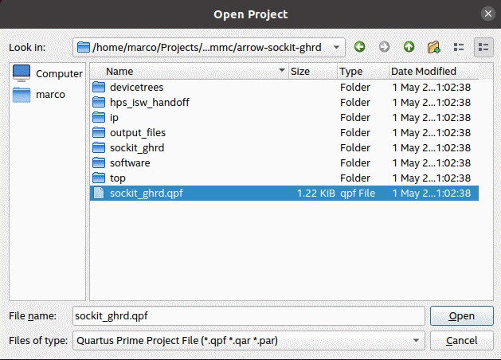
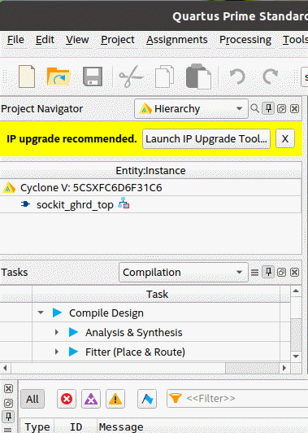
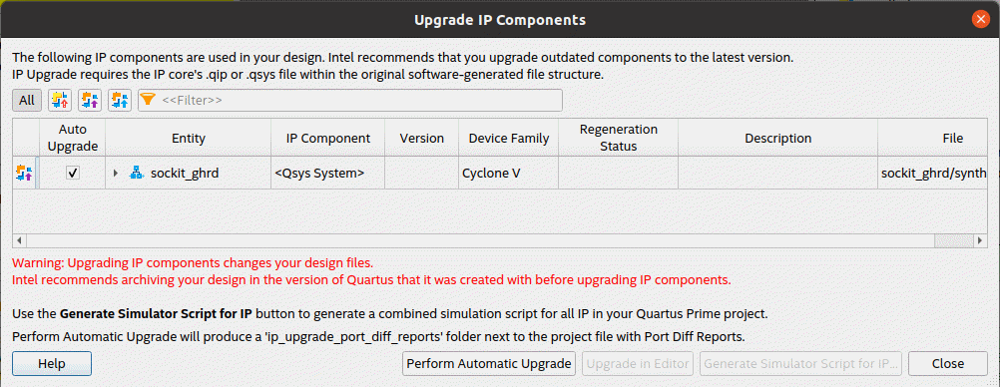
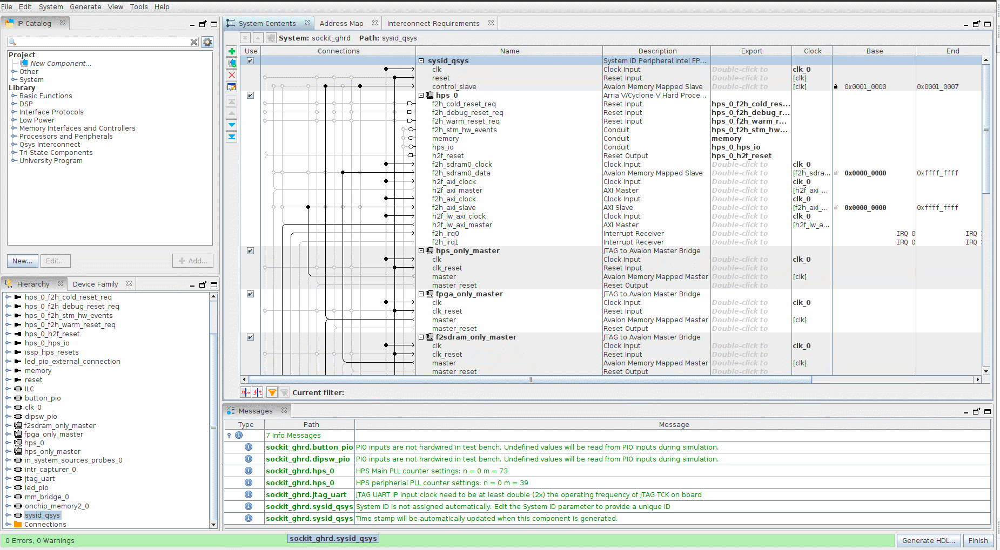
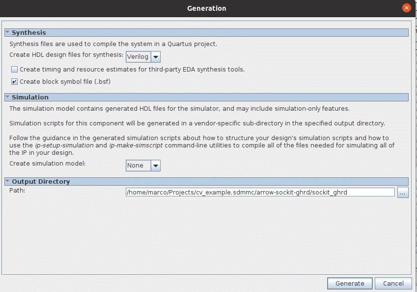
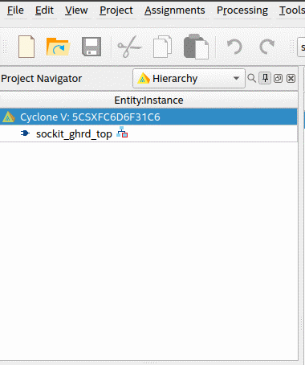
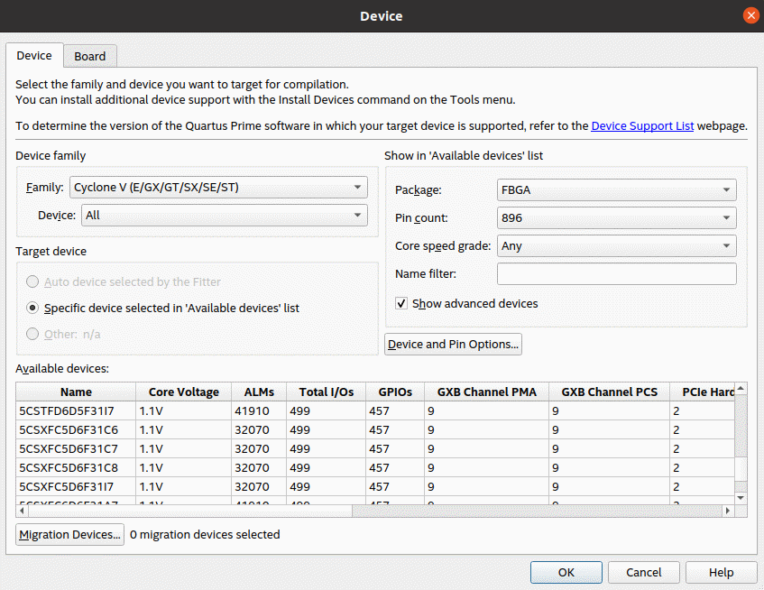
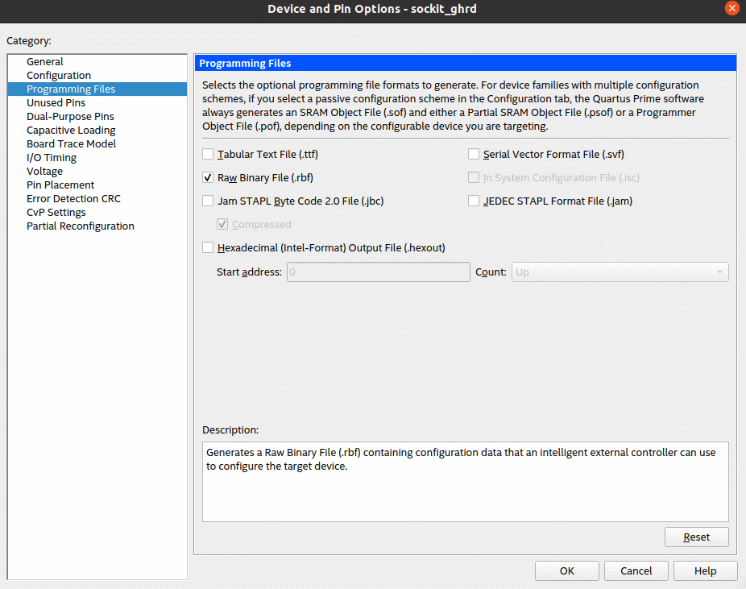

Cyclone 5 SoC 設計流程 – Rebuild Quartus Project
boot From SD Card
環境設定,假設Project是放在/home/Projects
cd ~/Projects
mkdir cv_example.sdmmc
cd cv_example.sdmmc
export TOP_FOLDER=`pwd`
下載 Arrow sockit 的參考設計並 compile.
cd $TOP_FOLDER
git clone https://github.com/arrow-socfpga/arrow-sockit-ghrd.git
cd arrow-sockit-ghrd
git check sockit-ghrd-19.1
打開 Quartus Prime Standard 並開啟 arrow-sockit-ghrd 裡面的 sockit_ghrd.qpf


unch IP upgrade Tool…Perform Automatic Upgrade


我們先不到去動這邊的設計,因此我們直接按 Generate HDL. (有興趣的人可以去看 如何增加 IP 到 Platform Designer 跟 CPU 連接)
Generate
跑 
完後,請按
close 跟
Finish.
設定如何產生 RBF 檔.
在藍色的區域點滑鼠右鍵 → 選 Device
選 
Device
and Pin Options
選 
Programming
Files → 將
Raw
Binary File(.rbf) 打勾
→ OK
→ OK 退回
Quartus
主要畫面

直接按上方 的 Icon 並Compile 整個 Project.
透過以上的步驟, 我們可以在這一個 Project 資料夾裡面找到 Output Files 這一個資料夾, 裡面會有 sockit_ghrd.rbf 這一個檔案